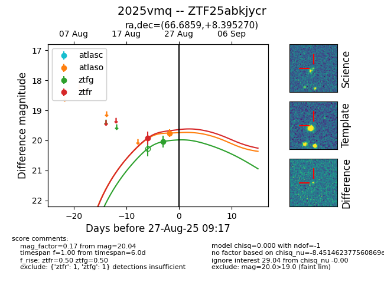

Target 2025vmq at 2025-08-27 11:54, see:
FINK: fink-portal.org/ZTF25abkjycr
Lasair: lasair-ztf.lsst.ac.uk/objects/ZTF25abkjycr
ALeRCE: alerce.online/object/ZTF25abkjycr
TNS: wis-tns.org/object/2025vmq
YSE: ziggy.ucolick.org/yse/transient_detail/2025vmq
alt names
ZTF25abkjycr (ztf,fink)
2025vmq (tns,yse)
coordinates:
equatorial (ra, dec) = (66.6859,+8.39527)
galactic (l, b) = (186.5450,-26.94260)
photometry
last atlaso=19.76, ztfg=20.10, ztfr=19.92
1 atlaso, 2 ztfg, 1 ztfr detections
